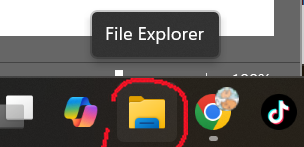
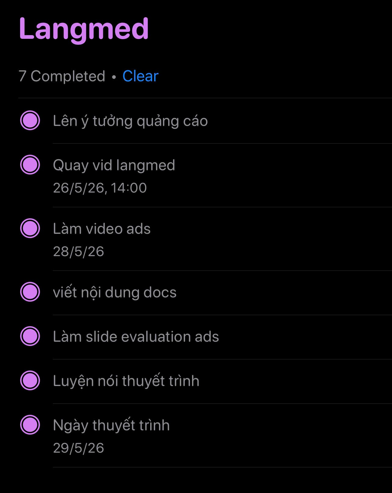
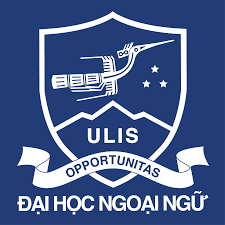
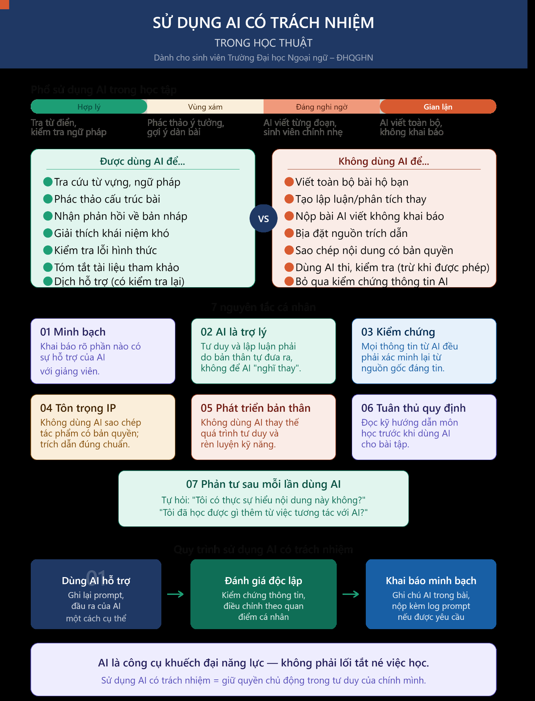

Họ và tên: Nguyễn Minh Khuê
MSSV: 25040731
Ngành: Ngôn ngữ Anh
Lớp CNS: VNU1001_E252063
Em học Ngôn ngữ Anh, nên portfolio được dựng như một cuốn liner notes của quá trình học: có nhịp điệu, có âm nhạc, có ghi chú học thuật và có phần phản tư về cách dùng AI có trách nhiệm.
Họ và tên: Nguyễn Minh Khuê
MSSV: 25040731
Ngành: Ngôn ngữ Anh
Lớp CNS: VNU1001_E252063
Em là sinh viên ngành Ngôn ngữ Anh, quan tâm tới cách công nghệ số và AI hỗ trợ việc học ngoại ngữ, tìm kiếm tài liệu, hợp tác nhóm và sáng tạo nội dung học thuật.
Portfolio này tổng hợp 6 bài học phần dưới dạng các trang web riêng, có nội dung bài, bảng biểu và ảnh minh chứng được giữ theo tài liệu gốc.
Quản lý tệp, thư mục và làm việc có tổ chức với tài liệu học tập.
Tìm kiếm nguồn học thuật về cách âm nhạc hỗ trợ việc học ngoại ngữ.
Dùng AI cho prompt, sáng tạo nội dung và xây dựng nguyên tắc học thuật có trách nhiệm.

Thực hành quản lý tệp tin, thư mục và ghi lại minh chứng thao tác trên máy tính.
Xem bài ↗Tìm kiếm, chọn lọc và đánh giá nguồn học thuật về việc học ngoại ngữ qua âm nhạc.
Xem bài ↗Thiết kế prompt theo nhiều mức độ để hỗ trợ tóm tắt, giải thích và ôn tập.
Xem bài ↗
Tổ chức hoạt động nhóm bằng công cụ trực tuyến và lưu lại minh chứng thực hiện.
Xem bài ↗
Sáng tạo infographic về sức khỏe tinh thần sinh viên bằng Claude, Gemini và Canva AI.
Xem bài ↗
Phản tư về chính sách, đạo đức học thuật và nguyên tắc cá nhân khi dùng AI.
Xem bài ↗